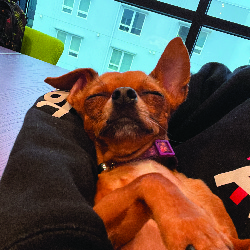

Keva
Age: 10 years old
Sassy but loving (has a catitude). She loves food and attention. Tends to be shy around new people.
Welcome to A Pawfect Match's Adoption Center! We're thrilled you're considering opening your heart and home to a pet in need. Here's everything you need to know about our adoption process:
Adoption fees help us provide essential care for our animals, including vaccinations, spaying/neutering, and microchipping. Fees vary by pet type and age:
Age: 10 years old
Sassy but loving (has a catitude). She loves food and attention. Tends to be shy around new people.
Age: 9 years old
Has no sense of personal space. Loves to yap/scream. Also loves food yet doesn't eat it.
Age: 4 years old
Chill. A fluffy fat cat who doesn't care about anything around him except food and tickles.
Age: 7 years old
Sweetest and kindest soul to roam the earth. Absolutely loves receiving any form of affection and will reciprocate that 10x back with very melodic purring. Appreciates treats, especially if it's tuna, and will follow you anywhere.

Age: 1 year old
Ferocious like Godzilla and stubborn but so cute.
Age: 4 years old
Energetic Cuddle Monster
Age: 10 years old
Timid and scared
Age: 10 years old
Protective, crazy, not opening to meeting new people
Age: 6 years old
Quiet and hyper
Age: 10 years old
Usually quiet, occasionally cuddly, friendly to strangers
Age: 13 years old
Loyal and very affectionate
Age: 8 years old
He loves licking people and finds comfort under big blankets :P

Age: 7 years old
Freya is NOT like other chihuahuas, she's super sweet and very well behaved. She's trained to task for those suffering panic attacks by distracting, comforting, or seeking help. You might see her on campus either walking or being carried in a backpack!
Age: 9 years old
He's a smart dog, so smart it makes you wonder if he's fluent in english. He plays and eats like he's a big, tough dog but he loves to cuddle up real close to you any chance he gets.
Age: 3 years old
Loves affection and very cuddly

Age: 1.5 years old
Poe is very talkative with a curious personality. He tends to find his way into food containers. Poe loves to look outside of windows and sleep on boxes.
Age: 12 years old
Pebbles is a lazy and food-loving dog, perfect for those who just want to chill with their pet. She can be quite stubborn but is a very loyal and protective companion.
Age: 4 years old
Energetic and no sense of personal space
Age: 2 years old
NoiNoi loves to sleep and lounge around. She is very talkative, meowing at everyone to give her food. She enjoys running around with her favorite blue ball.
Age: 2 years old
Ume loves to bully her siblings, she enjoys her personal space but occasionally cuddle with her siblings. When it comes to humans Ume loves attention and is a lap cat.
Age: 6 months
Mimi is an attention seeker, she loves to cuddle and invade personal space. She is the most affectionate kitten and will always clean and cuddle her older siblings. She is very talkative, she will make sure she has your attention by screaming.
Age: 4 years old
Benji is a cute, cuddly chihuahua mix. Very stubborn with a big appetite(sometimes eats from the trash) and always lets you know what he wants like barking when he's hungry for a treat or when he wants to go outside. Overall he is a very social dog that just wants to be in your arms.
Age: 2 years old
Gato loves to talk and loves to be petted. She enjoys attention from humans, but is very shy around new faces. Gato especially enjoys being fed and will finish her bowl in seconds.
Age: 10 years old
"Blind in One Eye, Peak Lap Dog, Sheep Toy Lover"
Age: 1 year old
High energy and goofy.
Age: 2 years old
Astro is an energetic, funny, unique pup he will always manage to put a smile on your face. He is also super mischievous, he loves socks. Really loves socks.
Age: 8 years old
Loving, calm, friendly, and active :)

Age: 4 months
Very energetic, loving, playful, and always enthusiastic for adventure.
Age: 6 years
A spoiled princess. She LOVES treats and will try to chomp your hand off when given one. Somehow isn't a fan of walks.
Age: 5 years
Will act tough but is a wimp as soon as a leaf blows by. Loves playtime with his toys and loves to eat any kind of food, as long as it's edible.